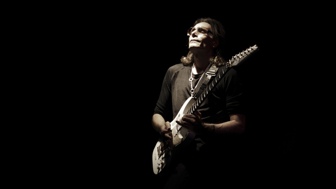

Steven Siro "Steve" Vai (nascut el 6 de juny de 1960 a Carle Place, Nova York, EUA). És un guitarrista i compositor nord-americà.
Ja des de petit el jove Vai es va interessar per les bandes de Rock com Jimi Hendrix, Alice Cooper i Led Zeppelin, de les quals ell va decidir aprendre a tocar la guitarra. Mentre cursava batxillerat va començar a rebre lliçons d'un estudiant més gran (Joe Satriani), i tocava en nombroses bandes locals. Als 18 anys se'n va anar a estudiar al Berklee College of Music, on va quedar fascinat per la música de Frank Zappa, qui després de trobar-se amb Vai per primera vegada va quedar molt impressionat de les habilitats del jove músic. Després de la seva graduació va entrar a formar part de la banda d'en Zappa.
Quan va deixar Zappa el 1980 es va traslladar a Califòrnia on va gravar el seu primer àlbum Flex-Able i va tocar amb altres grups. El 1985 va substituir Yngwie Malmsteen com a guitarrista solista a la banda Alcatrazz, amb els quals va gravar l'àlbum Disturbing the Peace. Més tard, l'any 1985, va entrar a la formació de l'ex-cantant de Van Halen Dave Lee Roth per gravar els àlbums Eat 'em and Smile i Skyscraper. Després, el 1990 Vai va substituir al guitarrista Adrian Vandenberg a la banda britànica Whitesnake, després que Vandenberg hagués de ser operat per una malaltia als nervis del canell just abans de la gravació del disc Slip of the Tongue.
Steve Vai continua fent gires regularment avui en dia, bé sigui amb la seva pròpia banda o amb el que una vegada va ser el seu professor Joe Satriani dins de la formació anomenada G3.
És un guitarrista que ha aportat la seva música en bona quantitat de pel·lícules; Dudes, Bill & Ted's Bogus Journey i Ghosts of Mars. També va aparèixer a Crossroads, en un duel amb l'actor Ralph Macchio, la guitarra del qual va ser doblada pel mateix Vai.
Grava les seves creacions en dos estudis; The mother ship i The harmony hut. Hi combina la seva signatura particular de guitarra amb una quantitat considerable d'efectes.
Vai està casat i té 2 nens, Julian Angel i Fire, amb Pia Maiocco, la baixista que va formar el grup Vixen.
Com a passatemps es coneix que té una gran afició a les abelles, tanta que els seus insectes produeixen una mel que Vai ven per a la fundació makeanoise.com.
Vai té la seva pròpia línia de guitarres, la sèrie JEM d'Ibanez. Va rebre un Grammy l'any 1991.